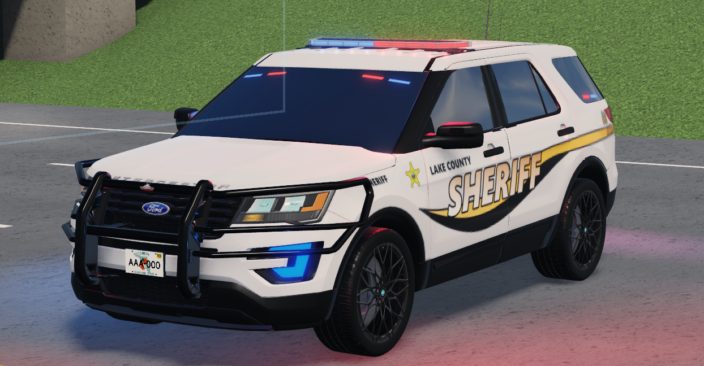
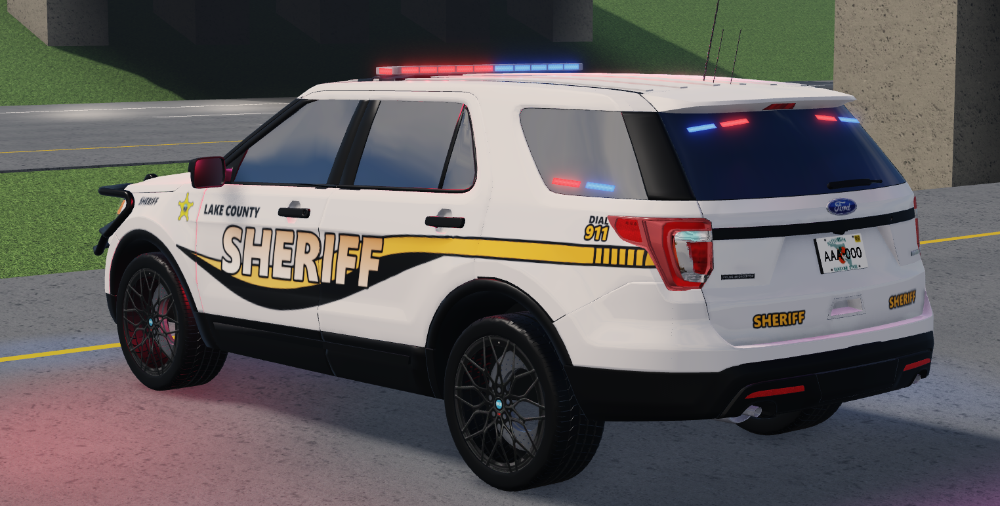
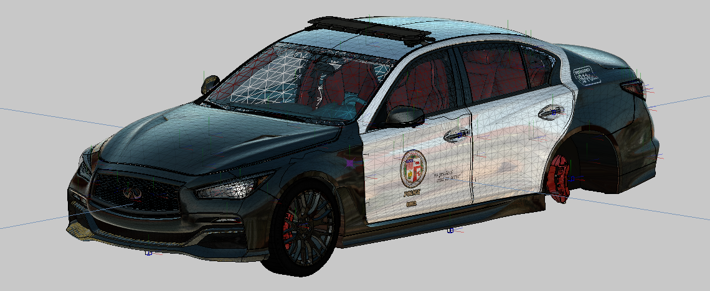
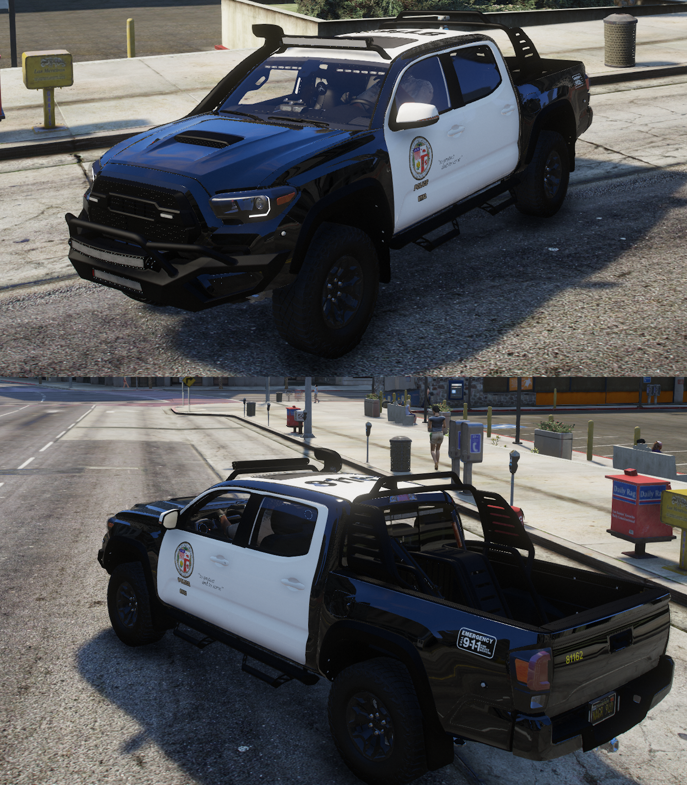

discord_status.exe
About.txt
Async
Roblox Full-Stack Developer
LuaLuauUI DesignVFX Design
Hi, I'm a 17 year old Roblox full-stack developer living in Hungary, focused on building scalable gameplay systems, clean architecture, and polished player experiences.
My experience spans client and server scripting, UI systems and design, visual effects, and backend logic. I build modular systems designed for performance and easy expansion.
A large part of my past work involved vehicle-based experiences and A-Chassis systems, though I'm not limited to vehicle frameworks. I've been developing since February 2021, and I started public game development at the end of September 2024.
✦ Projects I've contributed to have 60M+ combined visits (end of 2026 data).
C:\Async\Skills
- Lua
- Luau
- Client / Server architecture
- Modular system design
- RemoteEvents & RemoteFunctions
- Performance optimization
- Debugging and system architecture
- DataStore systems
- Player progression systems
- Server management
- Scalable game frameworks
- Player stat frameworks
- Reusable modular game systems
- UI design
- UI animation
- Responsive UI systems
- TweenService based effects
- Menus and HUD systems
- Data-driven interfaces
- Gameplay VFX scripting
- UI effects and transitions
- Feedback effects for gameplay systems
- Vehicle lighting / ELS systems
- A-Chassis systems and vehicle mechanics
I design UV-mapped textures and liveries for mesh parts in-game.
- Vehicle race liveries
- Police car liveries
- 1:1 recreations of real liveries
- Roblox Studio
- Blender
- Visual Studio Code
- Adobe Photoshop
- ZModeler3
- Flaticon.com
C:\Async\Pictures\Works




viewer
contact.lnk
talk to me, I guess ♡